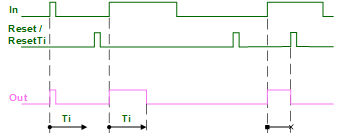
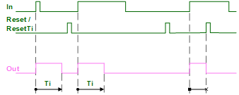
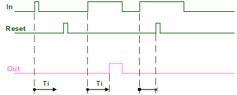
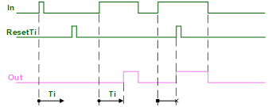
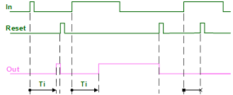
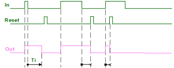
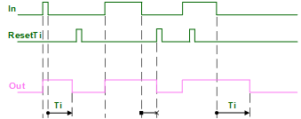

[TMR_FNCT] 脉冲和延迟
功能块 TMR_FNCT 处理脉冲信号。
TMR_FNCT 处理脉冲信号：
- Limit, harmonize, or extend pulse length
- Delay switch-on or switch-off
- Save switch-on
根据设置的定时器模式 [TiMod]，以下功能之一被激活。
- In general, a change of input value [In] starts the delay time or pulse length.
- Upon [Reset], the timer is reset and output [Out] is reset ([Out] = 0).
- Upon [ResetTi], the timer is reset and output [Out] is reset ([Out] = 0 or [In]).
1: Pulse (limit pulse length)
输入 [In] 处的脉冲被缩短至最大可能脉冲长度 [Ti]。
[Reset] 和 [ResetTi] 处的脉冲立即将输出重置为 [Out] = 0。

2: Expanded pulse (Constant pulse length)
输入 [In] 处的脉冲被延长或缩短至恒定脉冲长度 [Ti]。
[Reset] 和 [ResetTi] 处的脉冲立即将输出重置为 [Out] = 0。

3: Switch On delay
仅在延迟时间 [Ti] 后，输入 [In] 处的脉冲才会切换为输出 [Out]。短于 [Ti] 的脉冲无效。
[Reset] 处的脉冲立即将输出重置为 [Out] = 0。
[ResetTi] 处的脉冲立即将输出重置为 [Out] = [In]。


4: Stored switch On (Switch-on delay with saving property)
输入 [In] 上的脉冲在延迟时间 [Ti] 后将输出 [Out] 恒定切换为 1。
[Reset] 处的脉冲仅将输出重置为 [Out] = 0。
[ResetTi] 处的脉冲将输出立即重置为 [Out] = 1（无法重置为 [Out] = 0）。


由于没有立即将输出设置为 [Out] = 1 的复位用例，因此 [ResetTi] 处的脉冲没有可用的图形。
5: Switch off delay (Pulse extension)
输入 [In] 处的脉冲会延长延迟时间 [Ti]。
[Reset] 处的脉冲立即将输出重置为 [Out] = 0。
[ResetTi] 处的脉冲立即将输出重置为 [Out] = [In]。


Reset
[重置] 后，所有启动时间都会重置，并且输出 [Out] 也会重置。
如果[Reset]和[In]同时出现，则重置优先。如果在计时器运行期间再次出现启动条件，则计时重新开始。
ResetTi
[ResetTi] 后，所有启动时间都会重置，并根据定时器模式的所选功能设置输出 [Out]。
如果[ResetTi]和[In]同时出现，则复位优先。如果在计时器运行期间再次出现启动条件，则计时重新开始。
输入 | 描述 | 数据类型 | 默认值 |
|---|---|---|---|
In | Input | 布尔值 | 0 |
Ti | Time | 时间 | 1m_40s |
0 ms：无延迟时间或脉冲长度 | |||
TiMod | Timer mode | 整数 | 2: Expanded pulse |
1: Pulse- 限制脉冲长度。 | |||
Reset | Reset（输出始终为 0） | 布尔值 | 0 |
0 - 未完成重置。 | |||
ResetTi | Reset times（出=入） | 布尔值 | 0 1毫秒...24天 |
0 - 未完成重置。 | |||
输出 | 描述 | 数据类型 | 默认值 |
|---|---|---|---|
Out | Output | 布尔值 | 0 |
TiEld | Elapsed time 截止日期尚未确定。达到[Ti]后，[TiEld]重置为0。 | 时间 | 0 ms |
- Time delays and pulses (with the aid of an input signal).
The cycle generator CYCLEGEN function block can be used for pulses without start condition. - Switch-on and switch-off delays, minimum runtimes, minimum breaks for a component (by combining several TMR_FNCT).
Operating modes
- Pulse: The damper function is monitored by ensuring that it reaches the end position within a specified time after startup.
- Expanded pulse: Stairwell automation switches on the light for a specific time via button.
- Switch On delay: A presence detector switches on a fan only after a specific time after entering the room.
- Stored switch On: An automatic escalator switches on with the first customer.
- Switch Off delay: A bathroom exhaust switches off only after a specified time after the light is switched off.